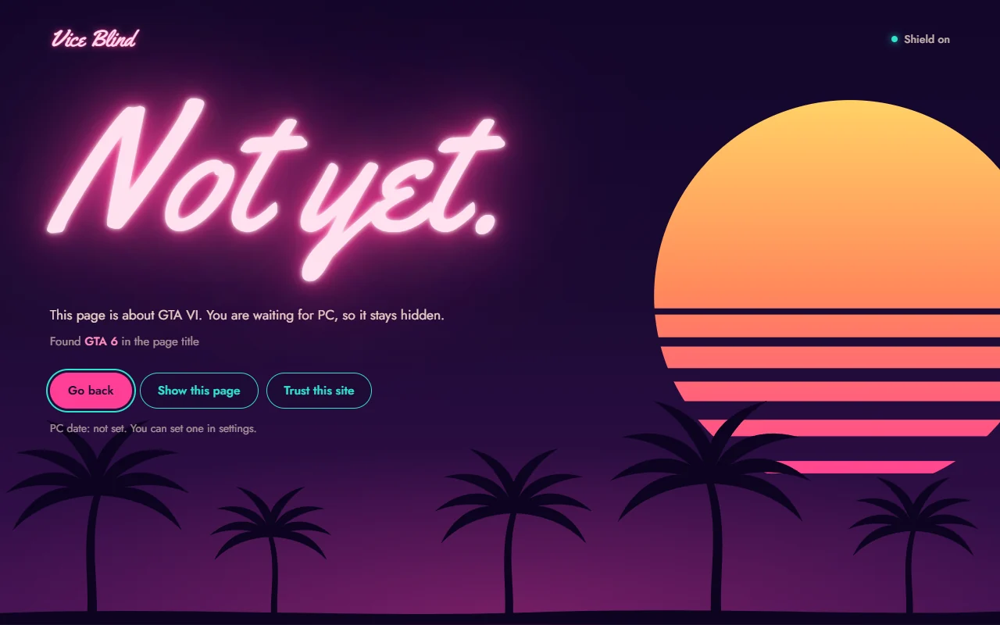
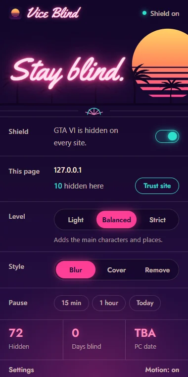

Stay blind.
Vice Blind hides GTA VI posts, videos, thumbnails and headlines on every site, so you can wait for the PC version without a single spoiler.
Free and open source. Works in Chrome, Edge, Brave, Opera and Firefox.
Try it right here
Two of these headlines are about GTA VI, so they are hidden. Click one twice to show it: the first click arms it, the second reveals it, so a stray click never spoils anything. The middle one is fine, so it stays.

What it does
Hides the post, not the page
A matching video tile, search result or headline is blurred, covered or removed. Everything around it stays usable.
Covers spoiler pages
If a page's title, heading or address is about GTA VI, you get the "Not yet." sign. Go back, show the page once, or trust the site.
Three levels
Light catches GTA 6 and GTA VI. Balanced adds the main characters and places. Strict adds Rockstar, Take-Two and GTA Online.
Your own words
Add names, games or streamers. Test any text and see what would be hidden. Set your PC date and it offers to switch itself off that day.
Install
Vice Blind is not in the browser stores yet. For now you download it from GitHub and load it yourself, which takes a minute.
Chrome, Edge, Brave and Opera
- Download
vice-blind-chrome-1.0.0.zipfrom the latest release and unzip it. - Open
chrome://extensions(edge://extensionsin Edge,opera://extensionsin Opera) and turn on Developer mode. - Choose Load unpacked and pick the unzipped folder.
- Pin Vice Blind from the puzzle icon. The number on it counts what was hidden on the page.
Firefox 140 and newer
- Download
vice-blind-firefox-1.0.0.zipfrom the release and unzip it. - Open
about:debugging#/runtime/this-firefox. - Choose Load Temporary Add-on and pick
manifest.jsonfrom the unzipped folder.
Firefox removes temporary add-ons when it restarts, so you load it again after a restart.
Each release lists SHA-256 checksums, so you can check your download. Safari is not supported.
Privacy and permissions
- No network. Vice Blind makes no requests. Everything runs on the page, in your browser.
- No tracking. No analytics, no accounts, no ads, no remote code.
- Why it asks for every site. It has to read pages on any site to find GTA VI content. It reads text only to match words, and nothing leaves your device.
- Your settings stay in your browser's own extension storage. If you use browser sync, your browser syncs them.
- Open source under the MIT licence. Read it, build it, change it.

Why I made this
I made Vice Blind for PC players who don't have a console. GTA VI lands on consoles first, and a lot of us will be waiting a long time for the PC version while every feed fills up with spoilers. I didn't want anyone's story ruined by a thumbnail or a headline, so I built this and made it free and open source.
Thank you to the whole GTA community, and to every PC player who is waiting patiently. The love you put into this series is why this exists. I hope we get GTA VI on PC sooner rather than later. Until then, stay blind.